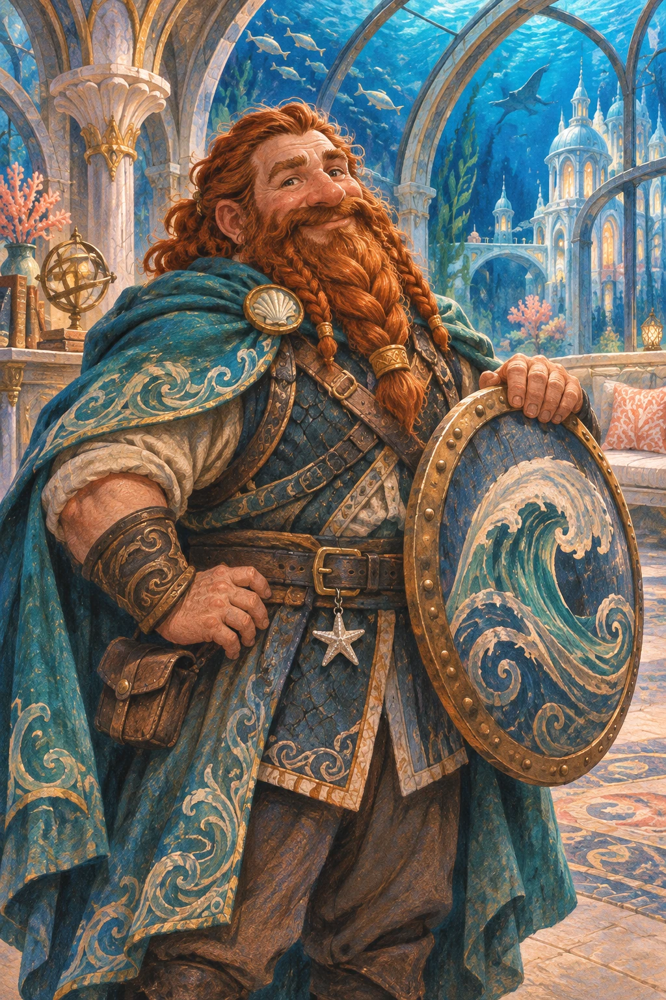

Дварф
Торен Риф
Защитник и бывший праздничный акробат
Мечта. Совершить поступок, о котором будут рассказывать, и узнать, как выглядит смелость без зрителей.
Друзья. Лея вернула ему потерянную звёздочку после выступления; Амалия помогла репетировать безопасное приземление. Он пригласил друзей увидеть морской праздник.
Что я могу попробовать
- Прикрыть друга, удержать дверь, помочь с тяжёлой вещью.
- Найти спокойный проход и предложить безопасный план.
- Рассказать о своём выступлении или попросить друга стать главным.
Какой твой самый смелый поступок никто не видел?